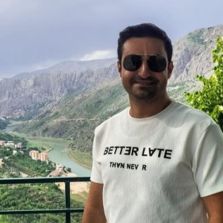

Sürek Şelalesi-Kemah (Erzincan)
YakındaŞelale ve çevresinin yüksek çözünürlüklü 3B modeli. Kalite seçici, ölçüm aracı, ortofoto ve renkli DEM içerir.
🔒 Yakında

Coğrafi Bilgi Sistemleri (CBS) ve uzaktan algılama tabanlı fiziki ve beşeri coğrafya araştırmaları yürütüyorum. Başlıca çalışma konularım: doğal afet duyarlılık analizleri (heyelan ve taşkın; AHP / Frekans Oranı yöntemleri), arazi kullanımı ve ekosistem değişimi, göl seviyesi ile orman örtüsü değişimlerinin uydu görüntüleriyle (Landsat, Sentinel) izlenmesi, jeomorfoloji ve jeolojik–kültürel miras (travertenler). Saha verilerini drone fotogrametrisi (Agisoft Metashape) ile yüksek çözünürlüklü 3B model, ortofoto ve sayısal yükseklik modeline (DEM) dönüştürüyorum.
Erzincan bölgesinin jeolojik ve kültürel mirası: travertenler, volkanik yapılar, jeomorfoloji, tarihi mimari ve kültürel koruma. EBYÜ ev sahipliğinde; MTA, UNESCO Türkiye Millî Komisyonu ve jeoloji/coğrafya derneklerinin desteğiyle, dört oturum ve teknik arazi gezileriyle uluslararası katılımlı çalıştay.